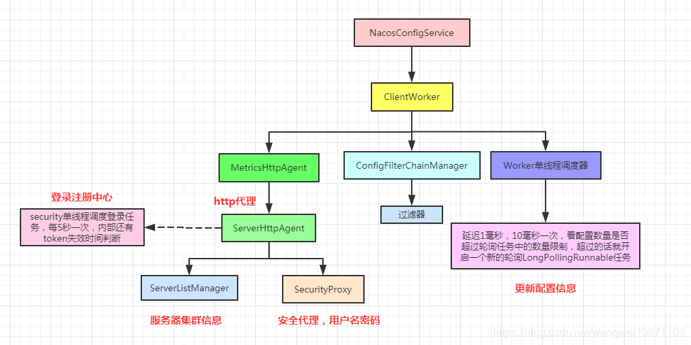
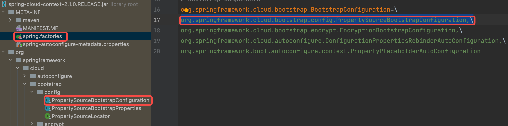
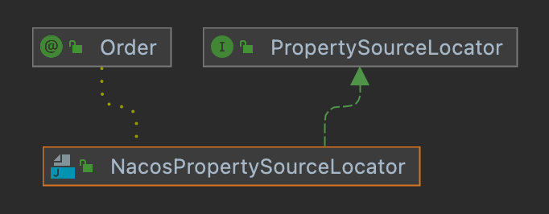
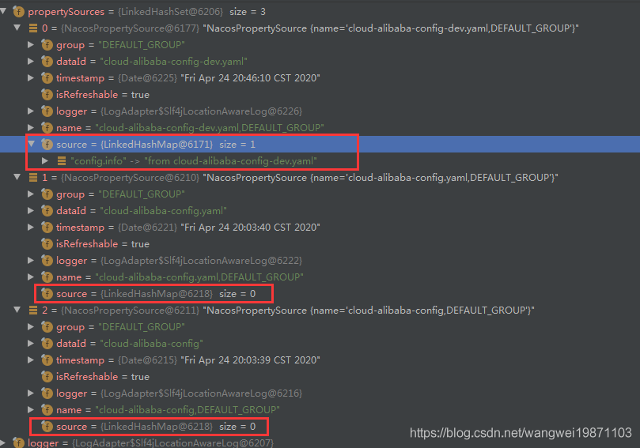
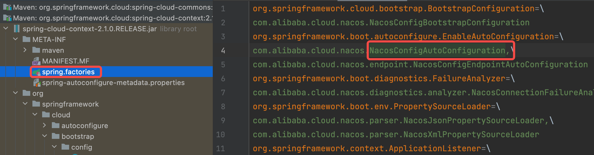
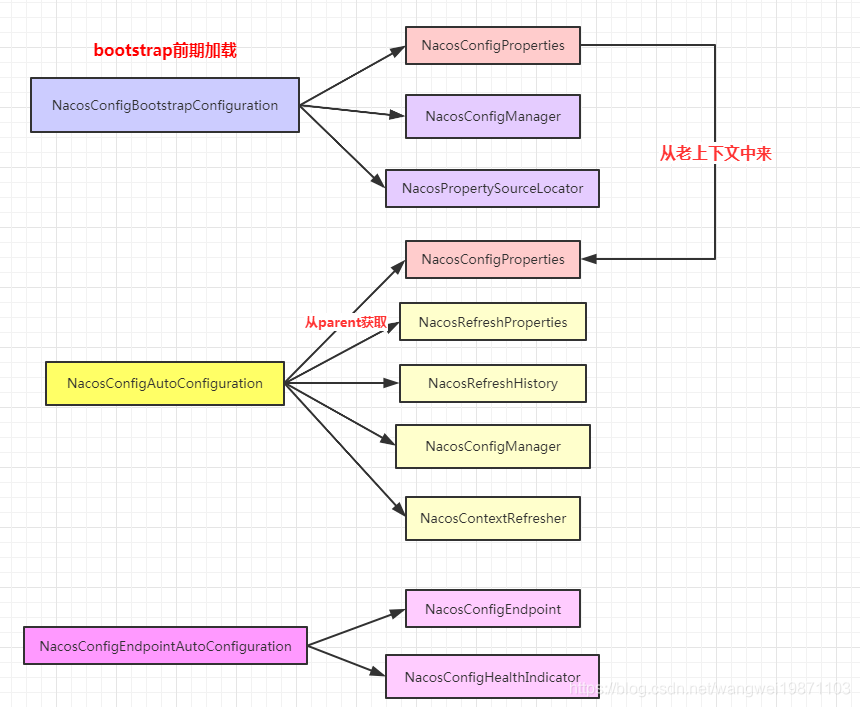
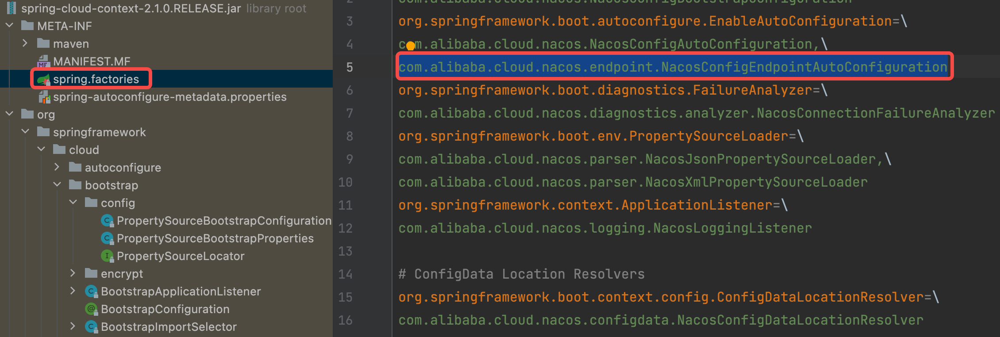

nacos大致结构：

注意：这里的nacos版本是2021版本 之后最新的版本可能不存在这个类。
x1<!-- nacos配置中心 -->2<dependency>3<groupId>com.alibaba.cloud</groupId>4<artifactId>spring-cloud-starter-alibaba-nacos-config</artifactId>5<version>2021.0.1.0</version>6</dependency>7<!-- 解决新版cloud中nacos配置的使用 -->9<dependency>10<groupId>org.springframework.cloud</groupId>11<artifactId>spring-cloud-starter-bootstrap</artifactId>12<version>3.1.2</version>13</dependency>
NacosConfigManager会在NacosConfigBootstrapConfiguration中进行注入：
271(proxyBeanMethods = false)2(name = "spring.cloud.nacos.config.enabled", matchIfMissing = true)3public class NacosConfigBootstrapConfiguration {4
5 6 7 public NacosConfigProperties nacosConfigProperties() {8 return new NacosConfigProperties();9 }10
11 // 注入NacosConfigManager12 13 14 public NacosConfigManager nacosConfigManager(15 NacosConfigProperties nacosConfigProperties) {16 return new NacosConfigManager(nacosConfigProperties);17 }18
19
20 // 注入NacosPropertySourceLocator21 22 public NacosPropertySourceLocator nacosPropertySourceLocator(23 NacosConfigManager nacosConfigManager) {24 return new NacosPropertySourceLocator(nacosConfigManager);25 }26
27}621public class NacosConfigManager {2
3 private static final Logger log = LoggerFactory.getLogger(NacosConfigManager.class);4
5 private static ConfigService service = null;6
7 private NacosConfigProperties nacosConfigProperties;8
9 // 构造器10 public NacosConfigManager(NacosConfigProperties nacosConfigProperties) {11 this.nacosConfigProperties = nacosConfigProperties;12 // Compatible with older code in NacosConfigProperties,It will be deleted in the13 // future.14 // 创建配置service15 createConfigService(nacosConfigProperties);16 }17
18 /**19 * 因为是第一次，所以会创建，这里你会发现他给NacosConfigManager类对象上锁了，20 * 防止多线程多次创建NacosConfigManager而重复创建配置服务。21 */22 static ConfigService createConfigService(23 NacosConfigProperties nacosConfigProperties) {24 if (Objects.isNull(service)) {25 synchronized (NacosConfigManager.class) {26 try {27 28 // 创建配置服务29 if (Objects.isNull(service)) {30 // ---看2-1.2步---31 service = NacosFactory.createConfigService(32 // ---end--- 33 34 // ---看2-1.1步--35 // 初始化配置36 nacosConfigProperties.assembleConfigServiceProperties()37 // ---end---38 );39 }40 }41 catch (NacosException e) {42 log.error(e.getMessage());43 throw new NacosConnectionFailureException(44 nacosConfigProperties.getServerAddr(), e.getMessage(), e);45 }46 }47 }48 return service;49 }50
51 public ConfigService getConfigService() {52 if (Objects.isNull(service)) {53 createConfigService(this.nacosConfigProperties);54 }55 return service;56 }57
58 public NacosConfigProperties getNacosConfigProperties() {59 return nacosConfigProperties;60 }61
62}初始化配置信息。
301public Properties assembleConfigServiceProperties() {2 Properties properties = new Properties();3 properties.put(SERVER_ADDR, Objects.toString(this.serverAddr, ""));4 properties.put(USERNAME, Objects.toString(this.username, ""));5 properties.put(PASSWORD, Objects.toString(this.password, ""));6 properties.put(ENCODE, Objects.toString(this.encode, ""));7 properties.put(NAMESPACE, Objects.toString(this.namespace, ""));8 properties.put(ACCESS_KEY, Objects.toString(this.accessKey, ""));9 properties.put(SECRET_KEY, Objects.toString(this.secretKey, ""));10 properties.put(RAM_ROLE_NAME, Objects.toString(this.ramRoleName, ""));11 properties.put(CLUSTER_NAME, Objects.toString(this.clusterName, ""));12 properties.put(MAX_RETRY, Objects.toString(this.maxRetry, ""));13 properties.put(CONFIG_LONG_POLL_TIMEOUT,14 Objects.toString(this.configLongPollTimeout, ""));15 properties.put(CONFIG_RETRY_TIME, Objects.toString(this.configRetryTime, ""));16 properties.put(ENABLE_REMOTE_SYNC_CONFIG,17 Objects.toString(this.enableRemoteSyncConfig, ""));18 String endpoint = Objects.toString(this.endpoint, "");19 if (endpoint.contains(":")) {20 int index = endpoint.indexOf(":");21 properties.put(ENDPOINT, endpoint.substring(0, index));22 properties.put(ENDPOINT_PORT, endpoint.substring(index + 1));23 }24 else {25 properties.put(ENDPOINT, endpoint);26 }27
28 enrichNacosConfigProperties(properties);29 return properties;30}使用反射创建NacosConfigService`，然后获取有参构造方法，反射创建实例。
171public static ConfigService createConfigService(Properties properties) throws NacosException {2 return ConfigFactory.createConfigService(properties);3}4
5public static ConfigService createConfigService(Properties properties) throws NacosException {6 try {7 Class<?> driverImplClass = Class.forName("com.alibaba.nacos.client.config.NacosConfigService");8 Constructor constructor = driverImplClass.getConstructor(Properties.class);9 // ---看2-1.3步---10 // 使用构造器进行创建11 ConfigService vendorImpl = (ConfigService) constructor.newInstance(properties);12 // ---end---13 return vendorImpl;14 } catch (Throwable e) {15 throw new NacosException(NacosException.CLIENT_INVALID_PARAM, e);16 }17} 里面有几个组件，ServerHttpAgent做http请求的代理，MetricsHttpAgent包装了ServerHttpAgent，加了计时的功能，ClientWorker做配置文件检查。
251public NacosConfigService(Properties properties) throws NacosException {2 String encodeTmp = properties.getProperty(PropertyKeyConst.ENCODE);3 if (StringUtils.isBlank(encodeTmp)) {4 //默认设置utf-85 encode = Constants.ENCODE;6 } else {7 encode = encodeTmp.trim();8 }9 10 // 初始化namespace11 initNamespace(properties);12 13 // ---看2-1.3.1步---14 // 创建了ServerHttpAgent配置相关15 // MetricsHttpAgent 只是包装了一层16 agent = new MetricsHttpAgent(new ServerHttpAgent(properties));17 // ---end---18 19 agent.start();20 21 // ---看2-1.3.2步---22 // 创建了客户端工作线程23 worker = new ClientWorker(agent, configFilterChainManager, properties);24 // ---end---25} ServerListManager用来管理注册中心集群列表，SecurityProxy用来安全验证的，默认没有用户名就没启用，登录验证直接返回true。另外这里会启一个调度任务，每5秒执行登录验证，但是内部还有个令牌时间判断的，超时了才会去验证。
301public ServerHttpAgent(Properties properties) throws NacosException {2 // 管理注册中心集群列表3 serverListMgr = new ServerListManager(properties);4 // 安全验证5 securityProxy = new SecurityProxy(properties);6 // namespaceId7 namespaceId = properties.getProperty(PropertyKeyConst.NAMESPACE);8 //设置编码，密码，最大重试次数9 init(properties);10 //代理登录11 securityProxy.login(serverListMgr.getServerUrls());12 //单线程调度执行器13 ScheduledExecutorService executorService = new ScheduledThreadPoolExecutor(1, new ThreadFactory() {14 15 public Thread newThread(Runnable r) {16 Thread t = new Thread(r);17 t.setName("com.alibaba.nacos.client.config.security.updater");18 t.setDaemon(true);19 return t;20 }21 });22 23 //无延迟开始调度,每5秒一次24 executorService.scheduleWithFixedDelay(new Runnable() {25 26 public void run() {27 securityProxy.login(serverListMgr.getServerUrls());28 }29 }, 0, securityInfoRefreshIntervalMills, TimeUnit.MILLISECONDS);30} http代理就是MetricsHttpAgent对象，有个过滤器管理器ConfigFilterChainManager，默认里面没有过滤器，可以addFilter自己加。这里也开启了一个单线程的执行器，执行checkConfigInfo检查配置任务，每10毫秒一次，去检查当前的配置数量，如果超过一个轮询任务的限制数量，默认3000个，就开启一个新的任务去做。
441public ClientWorker(final HttpAgent agent, final ConfigFilterChainManager configFilterChainManager, final Properties properties) {2 this.agent = agent;3 this.configFilterChainManager = configFilterChainManager;4
5
6 init(properties);7
8 executor = Executors.newScheduledThreadPool(1, new ThreadFactory() {9 10 public Thread newThread(Runnable r) {11 Thread t = new Thread(r);12 t.setName("com.alibaba.nacos.client.Worker." + agent.getName());13 t.setDaemon(true);14 return t;15 }16 });17 18 // 有cpu核数的线程，用来做长轮询的，每次检查配置，如果 LongPollingRunnable 任务的配置缓存超过一定数量，19 // 默认3000个，就要去开启一个新任务去检查配置并做更新20 executorService = Executors.newScheduledThreadPool(Runtime.getRuntime().availableProcessors(), new ThreadFactory() {21 22 public Thread newThread(Runnable r) {23 Thread t = new Thread(r);24 t.setName("com.alibaba.nacos.client.Worker.longPolling." + agent.getName());25 t.setDaemon(true);26 return t;27 }28 });29 30 // 配置检查31 executor.scheduleWithFixedDelay(new Runnable() {32 33 public void run() {34 try {35 // ---看2-1.3.3步---36 // 检查配置信息并启动长轮询37 checkConfigInfo();38 // ---end---39 } catch (Throwable e) {40 LOGGER.error("[" + agent.getName() + "] [sub-check] rotate check error", e);41 }42 }43 }, 1L, 10L, TimeUnit.MILLISECONDS);44}NacosConfigManager主要是启动线程通过长轮训每隔10ms检查任务缓存数量是否超过3000（默认），超过的话检查一次配置。
这个方法是每10毫秒执行一次，但是并不是会一直去执行新的LongPollingRunnable任务，是根据监听器的数量决定要不要再启动一个LongPollingRunnable，每个LongPollingRunnable默认可以负责3000个监听器的轮询。所以一般就只是开启了一个，因为是Math.ceil向上取整，最开始就会开启。
171public void checkConfigInfo() {2 // 分任务 根据监听器数量开启任务，默认一个任务3000个监听器3 int listenerSize = cacheMap.get().size();4 5 // 向上取整为批数6 int longingTaskCount = (int) Math.ceil(listenerSize / ParamUtil.getPerTaskConfigSize());7 8 if (longingTaskCount > currentLongingTaskCount) {9 for (int i = (int) currentLongingTaskCount; i < longingTaskCount; i++) {10 // ---往下看1---11 // 要判断任务是否在执行 这块需要好好想想。 任务列表现在是无序的。变化过程可能有问题12 executorService.execute(new LongPollingRunnable(i));13 // ---end---14 }15 currentLongingTaskCount = longingTaskCount;16 }17}LongPollingRunnable#run：这个就是整个轮询获取配置信息的过程：
首先会遍历所有的CacheData，找出是当前任务的加入到一个集合里，这里如果多的话会不会效率比较低啊，可能想办法直接放在任务中比较好吧。
然后如果是本次任务的就先检查本地配置，如果有改变的话就要通知监听器。
然后去请求服务器获取配置信息，如果是有在初始化的CacheData，那服务器就会立即返回，否则会被挂起，这个原因就是为了不进行频繁的空轮询，又能实现动态配置，只要在挂起的时间段内有改变，就可以理解响应给客户端。获取完之后再检查有没改变，有的话也要通知，然后继续调度当前任务。
891public void run() {3
4 List<CacheData> cacheDatas = new ArrayList<CacheData>();5 // 是否是在初始化的CacheData，会影响服务器是否挂起或者立即返回6 List<String> inInitializingCacheList = new ArrayList<String>();7 try {8 // check failover config9 for (CacheData cacheData : cacheMap.get().values()) {10 // 属于当前长轮询任务的11 if (cacheData.getTaskId() == taskId) {12 cacheDatas.add(cacheData);13 try {14 15 // ---往下看2---16 // 检查本地配置信息17 checkLocalConfig(cacheData);18 // ---end---19 20 // 用本地配置21 if (cacheData.isUseLocalConfigInfo()) {22 // 有改变的话会通知23 cacheData.checkListenerMd5();24 }25 } catch (Exception e) {26 LOGGER.error("get local config info error", e);27 }28 }29 }30 31 // ---往下看3---32 // 获取有变化的配置列表dataid+group,访问的url是/listener33 // check server config34 List<String> changedGroupKeys = checkUpdateDataIds(cacheDatas, inInitializingCacheList);35 // ---end---36 37 LOGGER.info("get changedGroupKeys:" + changedGroupKeys);38 39 // 轮询有配置改变的，然后去获取内容40 for (String groupKey : changedGroupKeys) {41 String[] key = GroupKey.parseKey(groupKey);42 String dataId = key[0];43 String group = key[1];44 String tenant = null;45 if (key.length == 3) {46 tenant = key[2];47 }48 49 // 有更新的就获取一次配置50 try {51 String[] ct = getServerConfig(dataId, group, tenant, 3000L);52 CacheData cache = cacheMap.get().get(GroupKey.getKeyTenant(dataId, group, tenant));53 // 设置配置内容54 cache.setContent(ct[0]);55 if (null != ct[1]) {56 // 设置配置类型57 cache.setType(ct[1]);58 }59 ...60 } catch (NacosException ioe) {61 ...62 }63 }64 65 // 通知监听器66 // 不是初始化中的或者初始化集合里存在的67 for (CacheData cacheData : cacheDatas) {68 if (!cacheData.isInitializing() || inInitializingCacheList69 .contains(GroupKey.getKeyTenant(cacheData.dataId, cacheData.group, cacheData.tenant))) {70 // ---往下看5---71 // 检查是否有变化，有变化就通知72 cacheData.checkListenerMd5();73 // ---end---74 75 // 请求过了后就设置为不在初始化中，这样就会被挂起，如果服务器配置有更新，就会立即返回，76 // 这样就可以实现动态配置更新，又不会太多的空轮询消耗77 cacheData.setInitializing(false);78 }79 }80 inInitializingCacheList.clear();81
82 executorService.execute(this);83
84 } catch (Throwable e) {85
86 LOGGER.error("longPolling error : ", e);87 executorService.schedule(this, taskPenaltyTime, TimeUnit.MILLISECONDS);88 }89}checkLocalConfig：如果没用本地文件，但是文件存在或者如果用本地文件，本地文件有更新，就获取内容，设置版本，设置setUseLocalConfigInfo(true)通知标记返回。如果用本地文件，但是不存在，不用设置通知，直接返回。
431//检查配置2private void checkLocalConfig(CacheData cacheData) {3 final String dataId = cacheData.dataId;4 final String group = cacheData.group;5 final String tenant = cacheData.tenant;6 File path = LocalConfigInfoProcessor.getFailoverFile(agent.getName(), dataId, group, tenant);7 8 // 不用本地配置，但是本地配置存在，获取本地的9 // 没有 -> 有10 if (!cacheData.isUseLocalConfigInfo() && path.exists()) {11 String content = LocalConfigInfoProcessor.getFailover(agent.getName(), dataId, group, tenant);12 String md5 = MD5.getInstance().getMD5String(content);13 cacheData.setUseLocalConfigInfo(true);//设置用本地的14 cacheData.setLocalConfigInfoVersion(path.lastModified());//设置版本15 cacheData.setContent(content);16
17 LOGGER.warn("[{}] [failover-change] failover file created. dataId={}, group={}, tenant={}, md5={}, content={}",18 agent.getName(), dataId, group, tenant, md5, ContentUtils.truncateContent(content));19 return;20 }21 22 // 用本地配置文件，但是不存在，直接返回23 // 有 -> 没有。不通知业务监听器，从server拿到配置后通知。24 if (cacheData.isUseLocalConfigInfo() && !path.exists()) {25 cacheData.setUseLocalConfigInfo(false);26 LOGGER.warn("[{}] [failover-change] failover file deleted. dataId={}, group={}, tenant={}", agent.getName(),27 dataId, group, tenant);28 return;29 }30 31 // 用本地，存在，版本有变更，更新32 // 有变更33 if (cacheData.isUseLocalConfigInfo() && path.exists()34 && cacheData.getLocalConfigInfoVersion() != path.lastModified()) {35 String content = LocalConfigInfoProcessor.getFailover(agent.getName(), dataId, group, tenant);36 String md5 = MD5.getInstance().getMD5String(content);37 cacheData.setUseLocalConfigInfo(true);38 cacheData.setLocalConfigInfoVersion(path.lastModified());39 cacheData.setContent(content);40 LOGGER.warn("[{}] [failover-change] failover file changed. dataId={}, group={}, tenant={}, md5={}, content={}",41 agent.getName(), dataId, group, tenant, md5, ContentUtils.truncateContent(content));42 }43}checkUpdateDataIds：获取改变的配置文件，这个是把所有的CacheData的相关信息都连起来，一次性批量请求。但是其中有个比较重要的就是inInitializingCacheList，这个表示里面是否有正在初始化的CacheData，如果有的话后面会设置一个标记，是的服务器不会挂起请求，会立即响应。 这里的响应只是告诉你哪些是有变化的，不会把内容给你，后面还得请求内容。
281List<String> checkUpdateDataIds(List<CacheData> cacheDatas, List<String> inInitializingCacheList) throws IOException {2 //把配置信息都连起来，一次请求3 StringBuilder sb = new StringBuilder();4 for (CacheData cacheData : cacheDatas) {5 //不用本地的6 if (!cacheData.isUseLocalConfigInfo()) {7 sb.append(cacheData.dataId).append(WORD_SEPARATOR);8 sb.append(cacheData.group).append(WORD_SEPARATOR);9 if (StringUtils.isBlank(cacheData.tenant)) {10 sb.append(cacheData.getMd5()).append(LINE_SEPARATOR);11 } else {12 sb.append(cacheData.getMd5()).append(WORD_SEPARATOR);13 sb.append(cacheData.getTenant()).append(LINE_SEPARATOR);14 }15 if (cacheData.isInitializing()) {16 17 // cacheData 首次出现在cacheMap中&首次check更新18 inInitializingCacheList19 .add(GroupKey.getKeyTenant(cacheData.dataId, cacheData.group, cacheData.tenant));20 }21 }22 }23 //是否是初始化的获取标记24 boolean isInitializingCacheList = !inInitializingCacheList.isEmpty();25 // ---往下看4---26 return checkUpdateConfigStr(sb.toString(), isInitializingCacheList);27 // ---end---28 }checkUpdateConfigStr：这里就会根据isInitializingCacheList来设置一个标记，让服务器判断是否要挂起，请求的url是/v1/cs/configs/listener，这里超时增加了，默认变成了45秒，就是为了应对挂起和检查配置文件变更。内部怎么请求的前面讲过了，就不多说了。这里根据情况还要设置服务器健康状态setHealthServer，然后拿到改变的配置文件结果解析后返回。
451List<String> checkUpdateConfigStr(String probeUpdateString, boolean isInitializingCacheList) throws IOException {2
3 List<String> params = new ArrayList<String>(2);4 params.add(Constants.PROBE_MODIFY_REQUEST);5 params.add(probeUpdateString);6
7 List<String> headers = new ArrayList<String>(2);8 headers.add("Long-Pulling-Timeout");9 headers.add("" + timeout);10
11 // 是初始化的会设置一个请求头标记12 if (isInitializingCacheList) {13 headers.add("Long-Pulling-Timeout-No-Hangup");14 headers.add("true");15 }16
17 if (StringUtils.isBlank(probeUpdateString)) {18 return Collections.emptyList();19 }20
21 try {22
23 // 增加超时时间，防止被挂起，只有初始化的时候isInitializingCacheList=true不会挂起，24 // 应该是服务器看了请求头Long-Pulling-Timeout-No-Hangup才不会挂起25 long readTimeoutMs = timeout + (long) Math.round(timeout >> 1);//45秒26 27 // post请求获取到具体的内通28 HttpResult result = agent.httpPost(Constants.CONFIG_CONTROLLER_PATH + "/listener", headers, params,29 agent.getEncode(), readTimeoutMs);30
31 if (HttpURLConnection.HTTP_OK == result.code) {32 setHealthServer(true);33 // 解析34 return parseUpdateDataIdResponse(result.content);35 } else {36 setHealthServer(false);37 LOGGER.error("[{}] [check-update] get changed dataId error, code: {}", agent.getName(), result.code);38 }39 } catch (IOException e) {40 setHealthServer(false);41 LOGGER.error("[" + agent.getName() + "] [check-update] get changed dataId exception", e);42 throw e;43 }44 return Collections.emptyList();45}checkListenerMd5：这里就是遍历所有的监听器，然后看配置内容是否有变化，有的话就进行通知。
121void checkListenerMd5() {2 for (ManagerListenerWrap wrap : listeners) {3 //有改变的话就通知4 if (!md5.equals(wrap.lastCallMd5)) {5 // ---往下看6---6 // 进行通知7 safeNotifyListener(dataId, group, content, type, md5, wrap);8 // ---end---9 }10 }11}12
safeNotifyListener：创建了一个任务，封装好信息，调用监听器的receiveConfigInfo方法接受数据处理。然后修改内容和MD5。这里他设置了一下类加载器，包装和监听器的类加载器一样，可能跟SPI反射调用相关。
671private void safeNotifyListener(final String dataId, final String group, final String content, final String type,2 final String md5, final ManagerListenerWrap listenerWrap) {3 final Listener listener = listenerWrap.listener;4
5 Runnable job = new Runnable() {6 7 public void run() {8 ClassLoader myClassLoader = Thread.currentThread().getContextClassLoader();9 ClassLoader appClassLoader = listener.getClass().getClassLoader();10 11 try {12 if (listener instanceof AbstractSharedListener) {13 AbstractSharedListener adapter = (AbstractSharedListener) listener;14 adapter.fillContext(dataId, group);15 LOGGER.info("[{}] [notify-context] dataId={}, group={}, md5={}", name, dataId, group, md5);16 }17 // 执行回调之前先将线程classloader设置为具体webapp的classloader，18 // 以免回调方法中调用spi接口是出现异常或错用（多应用部署才会有该问题）。19 Thread.currentThread().setContextClassLoader(appClassLoader);20
21 ConfigResponse cr = new ConfigResponse();22 cr.setDataId(dataId);23 cr.setGroup(group);24 cr.setContent(content);25 configFilterChainManager.doFilter(null, cr);26 String contentTmp = cr.getContent();27 listener.receiveConfigInfo(contentTmp);28
29 // compare lastContent and content30 if (listener instanceof AbstractConfigChangeListener) {31 Map data = ConfigChangeHandler.getInstance().parseChangeData(listenerWrap.lastContent, content, type);32 ConfigChangeEvent event = new ConfigChangeEvent(data);33 ((AbstractConfigChangeListener)listener).receiveConfigChange(event);34 listenerWrap.lastContent = content;35 }36
37 listenerWrap.lastCallMd5 = md5;38 LOGGER.info("[{}] [notify-ok] dataId={}, group={}, md5={}, listener={} ", name, dataId, group, md5,39 listener);40 } catch (NacosException de) {41 LOGGER.error("[{}] [notify-error] dataId={}, group={}, md5={}, listener={} errCode={} errMsg={}", name,42 dataId, group, md5, listener, de.getErrCode(), de.getErrMsg());43 } catch (Throwable t) {44 LOGGER.error("[{}] [notify-error] dataId={}, group={}, md5={}, listener={} tx={}", name, dataId, group,45 md5, listener, t.getCause());46 } finally {47 Thread.currentThread().setContextClassLoader(myClassLoader);48 }49 }50 };51
52 final long startNotify = System.currentTimeMillis();53 try {54 if (null != listener.getExecutor()) {55 listener.getExecutor().execute(job);56 } else {57 // 一般是直接运行的58 job.run();59 }60 } catch (Throwable t) {61 LOGGER.error("[{}] [notify-error] dataId={}, group={}, md5={}, listener={} throwable={}", name, dataId, group,62 md5, listener, t.getCause());63 }64 final long finishNotify = System.currentTimeMillis();65 LOGGER.info("[{}] [notify-listener] time cost={}ms in ClientWorker, dataId={}, group={}, md5={}, listener={} ",66 name, (finishNotify - startNotify), dataId, group, md5, listener);67}监视器的处理看4-2步。
通过自动化装配加载进来。

也是个初始化器，因为在准备好上下文，刷新前applyInitializers方法中进行处理：
731(PropertySourceBootstrapProperties.class)3public class PropertySourceBootstrapConfiguration implements4 ApplicationContextInitializer<ConfigurableApplicationContext>, Ordered {5 6 // 注入属性 注入了nacos的NacosPropertySourceLocator了7 (required = false)8 private List<PropertySourceLocator> propertySourceLocators = new ArrayList<>();9 10 11 public int getOrder() {12 return this.order;13 }14
15 public void setPropertySourceLocators(16 Collection<PropertySourceLocator> propertySourceLocators) {17 this.propertySourceLocators = new ArrayList<>(propertySourceLocators);18 }19 20 // bootstrapProperties21 public static final String BOOTSTRAP_PROPERTY_SOURCE_NAME = BootstrapApplicationListener.BOOTSTRAP_PROPERTY_SOURCE_NAME22 + "Properties";23 24 // 初始化25 26 public void initialize(ConfigurableApplicationContext applicationContext) {27 28 //将属性源定位器propertySourceLocators排序，然后遍历进行定位，放进封装成PropertySource并放进集合里。29 CompositePropertySource composite = new CompositePropertySource(30 BOOTSTRAP_PROPERTY_SOURCE_NAME);31 AnnotationAwareOrderComparator.sort(this.propertySourceLocators);32 33 34 boolean empty = true;35 ConfigurableEnvironment environment = applicationContext.getEnvironment();36 37 38 // 执行加载 39 for (PropertySourceLocator locator : this.propertySourceLocators) {40 PropertySource<?> source = null;41 // ---看3-1步---42 source = locator.locate(environment);43 // ---end---44 if (source == null) {45 continue;46 }47 logger.info("Located property source: " + source);48 composite.addPropertySource(source);49 empty = false;50 }51 52 53 //如果结果不为空54 if (!empty) {55 MutablePropertySources propertySources = environment.getPropertySources();56 String logConfig = environment.resolvePlaceholders("${logging.config:}");57 LogFile logFile = LogFile.get(environment);58 if (propertySources.contains(BOOTSTRAP_PROPERTY_SOURCE_NAME)) {59 //删除bootstrapProperties，因为bootstrap已经处理完了60 propertySources.remove(BOOTSTRAP_PROPERTY_SOURCE_NAME);61 }62 //将结果放入环境的MutablePropertySources中63 insertPropertySources(propertySources, composite);64 //重新初始化log系统65 reinitializeLoggingSystem(environment, logConfig, logFile);66 //设置log级别67 setLogLevels(applicationContext, environment);68 //处理包含的环境配置69 handleIncludedProfiles(environment);70 }71 }72 73}NacosPropertySourceLocator实现了Property并且也在NacosConfigBootstrapConfiguration注入到Spring容器。

471public PropertySource<?> locate(Environment env) {3 //设置环境4 nacosConfigProperties.setEnvironment(env);5 6 //获取配置服务7 ConfigService configService = nacosConfigManager.getConfigService();8
9 if (null == configService) {10 log.warn("no instance of config service found, can't load config from nacos");11 return null;12 }13 14 //超时30秒15 long timeout = nacosConfigProperties.getTimeout();16 17 //属性源建造器18 nacosPropertySourceBuilder = new NacosPropertySourceBuilder(configService, timeout);19 20 //dataid的名字21 String name = nacosConfigProperties.getName();22
23 //前缀24 String dataIdPrefix = nacosConfigProperties.getPrefix();25 if (StringUtils.isEmpty(dataIdPrefix)) {26 dataIdPrefix = name;27 }28
29 //前缀为空的话默认就是spring.application.name30 if (StringUtils.isEmpty(dataIdPrefix)) {31 32 dataIdPrefix = env.getProperty("spring.application.name");33 }34 //创建符合属性源35 CompositePropertySource composite = new CompositePropertySource(36 NACOS_PROPERTY_SOURCE_NAME);37
38 loadSharedConfiguration(composite);39 loadExtConfiguration(composite);40 41 // ---看3-1.1步---42 // 加载应用程序配置43 loadApplicationConfiguration(composite, dataIdPrefix, nacosConfigProperties, env);44 // ---end---45
46 return composite;47} 先获取配置的扩展名和费祖，然后进行3次加载，第一次是默认文件名的配置加载，第二次是默认文件名加后缀，第三次是默认文件名加激活的环境加后缀，也就是我们经常用激活环境的配置文件xxx-dev-yaml这种。加载后的信息都要放入CompositePropertySource符合属性里，到时候要返回出去的。
291private void loadApplicationConfiguration(2 CompositePropertySource compositePropertySource, String dataIdPrefix,3 NacosConfigProperties properties, Environment environment) {4 //扩展名5 String fileExtension = properties.getFileExtension();6 7 //分组，默认DEFAULT_GROUP8 String nacosGroup = properties.getGroup();9 10 // ---看3-1.1.1步---11 // load directly once by default 直接默认配置文件加载一次12 loadNacosDataIfPresent(compositePropertySource, dataIdPrefix, nacosGroup,13 fileExtension, true);14 // ---end---15 16 //文件名加后缀来一次17 // load with suffix, which have a higher priority than the default18 loadNacosDataIfPresent(compositePropertySource,19 dataIdPrefix + DOT + fileExtension, nacosGroup, fileExtension, true);20 21 //有环境配置的更高级别22 // Loaded with profile, which have a higher priority than the suffix23 for (String profile : environment.getActiveProfiles()) {24 String dataId = dataIdPrefix + SEP1 + profile + DOT + fileExtension;25 loadNacosDataIfPresent(compositePropertySource, dataId, nacosGroup,26 fileExtension, true);27 }28
29}可以看到都是调用loadNacosDataIfPresent 来加载权限。 我们看下这个方法。
先加载，然后把结果放CompositePropertySource 的最前面，加载不到也没关系。
301private void loadNacosDataIfPresent(final CompositePropertySource composite,2 final String dataId, final String group, String fileExtension,3 boolean isRefreshable) {4 ...5 6 // 执行加载的动作 往下看吧7 NacosPropertySource propertySource = this.loadNacosPropertySource(dataId, group,8 fileExtension, isRefreshable);9 10 this.addFirstPropertySource(composite, propertySource, false);11}12
13// 执行加载 第一次进来的时候是要去获取的，所以走 nacosPropertySourceBuilder.build。14private NacosPropertySource loadNacosPropertySource(final String dataId,15 final String group, String fileExtension, boolean isRefreshable) {16 //刷新过了17 if (NacosContextRefresher.getRefreshCount() != 0) {18 //不刷新，直接缓存取19 if (!isRefreshable) {20 return NacosPropertySourceRepository.getNacosPropertySource(dataId,21 group);22 }23 }24 25 // ---看3-1.1.2步---26 // 走 bbuild来执行加载27 return nacosPropertySourceBuilder.build(dataId, group, fileExtension,28 isRefreshable);29 // ---end---30} 先加载数据，然后结果封装成NacosPropertySource，放进缓存。
161NacosPropertySource build(String dataId, String group, String fileExtension, boolean isRefreshable) {2 // ---往下看---3 // 加载数据 4 Map<String, Object> p = loadNacosData(dataId, group, fileExtension);5 // ---end---6 7 // 封装成source对象8 NacosPropertySource nacosPropertySource = new NacosPropertySource(group, dataId,9 p, new Date(), isRefreshable);10 11 // 进行缓存12 NacosPropertySourceRepository.collectNacosPropertySource(nacosPropertySource);13 14 // 返回15 return nacosPropertySource;16}loadNacosData：用NacosConfigService来加载，加载到了就解析成LinkedHashMap返回，否则就是个空的LinkedHashMap。
221private Map<String, Object> loadNacosData(String dataId, String group,2 String fileExtension) {3 String data = null;4 try {5 6 // ---看3-1.1.3步---7 // 通过configService来加载配置信息8 data = configService.getConfig(dataId, group, timeout);9 // ---end---10 ...11 12 // ---看3-1.1.4步--- 13 // 解析数据14 Map<String, Object> dataMap = NacosDataParserHandler.getInstance()15 .parseNacosData(data, fileExtension);16 // ---end---17 18 // 是null就返回空map19 return dataMap == null ? EMPTY_MAP : dataMap;20 }21 return EMPTY_MAP;22} 首先优先从本地获取，其实就是从本地读取，比如windows的话，就是C:\Users\Administrator\nacos\config\fixed-127.0.0.1_8848_nacos\data下的config-data后者config-data-tenant目录中获取相应配置文件。
581public String getConfig(String dataId, String group, long timeoutMs) throws NacosException {3 // 加载配置4 return getConfigInner(namespace, dataId, group, timeoutMs);5}6
7private String getConfigInner(String tenant, String dataId, String group, long timeoutMs) throws NacosException {8 group = null2defaultGroup(group);//默认组9 ParamUtils.checkKeyParam(dataId, group);//检查参数10 ConfigResponse cr = new ConfigResponse();//创建响应11
12 cr.setDataId(dataId);13 cr.setTenant(tenant);14 cr.setGroup(group);15 16 // ---往下看1---17 // 优先使用本地配置18 String content = LocalConfigInfoProcessor.getFailover(agent.getName(), dataId, group, tenant);19 // ---end---20 21 if (content != null) {22 LOGGER.warn("[{}] [get-config] get failover ok, dataId={}, group={}, tenant={}, config={}", agent.getName(),23 dataId, group, tenant, ContentUtils.truncateContent(content));24 cr.setContent(content);25 configFilterChainManager.doFilter(null, cr);26 content = cr.getContent();27 return content;28 }29 30 // 从远程server端进行加载31 try {32 // ---往下看2---33 // 远程获取34 content = worker.getServerConfig(dataId, group, tenant, timeoutMs);35 // ---end---36
37 cr.setContent(content);38
39 configFilterChainManager.doFilter(null, cr);40 content = cr.getContent();41
42 return content;43 } catch (NacosException ioe) {44 if (NacosException.NO_RIGHT == ioe.getErrCode()) {45 throw ioe;46 }47 LOGGER.warn("[{}] [get-config] get from server error, dataId={}, group={}, tenant={}, msg={}",48 agent.getName(), dataId, group, tenant, ioe.toString());49 }50
51 LOGGER.warn("[{}] [get-config] get snapshot ok, dataId={}, group={}, tenant={}, config={}", agent.getName(),52 dataId, group, tenant, ContentUtils.truncateContent(content));53 content = LocalConfigInfoProcessor.getSnapshot(agent.getName(), dataId, group, tenant);54 cr.setContent(content);55 configFilterChainManager.doFilter(null, cr);56 content = cr.getContent();57 return content;58}LocalConfigInfoProcessor#getFailover：加载本地缓存配置文件。
531static public String getFailover(String serverName, String dataId, String group, String tenant) {2 // 获取文件3 File localPath = getFailoverFile(serverName, dataId, group, tenant);4 if (!localPath.exists() || !localPath.isFile()) {5 return null;6 }7
8 try {9 // 读取文件10 return readFile(localPath);11 } catch (IOException ioe) {12 LOGGER.error("[" + serverName + "] get failover error, " + localPath, ioe);13 return null;14 }15}16
17// 获取文件18static File getFailoverFile(String serverName, String dataId, String group, String tenant) {19 File tmp = new File(LOCAL_SNAPSHOT_PATH, serverName + "_nacos");20 tmp = new File(tmp, "data");21 if (StringUtils.isBlank(tenant)) {22 tmp = new File(tmp, "config-data");23 } else {24 tmp = new File(tmp, "config-data-tenant");25 tmp = new File(tmp, tenant);26 }27 return new File(new File(tmp, group), dataId);28}29
30
31// 读取文件32static private String readFile(File file) throws IOException {33 if (!file.exists() || !file.isFile()) {34 return null;35 }36
37 if (JVMUtil.isMultiInstance()) {38 return ConcurrentDiskUtil.getFileContent(file, Constants.ENCODE);39 } else {40 InputStream is = null;41 try {42 is = new FileInputStream(file);43 return IOUtils.toString(is, Constants.ENCODE);44 } finally {45 try {46 if (null != is) {47 is.close();48 }49 } catch (IOException ioe) {50 }51 }52 }53}ClientWorker#getServerConfig：用代理请求/v1/cs/configs，传参数dataId，group，tenant获取配置文件。
251public String[] getServerConfig(String dataId, String group, String tenant, long readTimeout) throws NacosException {2 // 放文件内容和类型3 String[] ct = new String[2];4 // 设置默认group5 if (StringUtils.isBlank(group)) {6 group = Constants.DEFAULT_GROUP;7 }8
9 HttpResult result = null;10 try {11 List<String> params = null;12 if (StringUtils.isBlank(tenant)) {13 params = new ArrayList<String>(Arrays.asList("dataId", dataId, "group", group));14 } else {15 params = new ArrayList<String>(Arrays.asList("dataId", dataId, "group", group, "tenant", tenant));16 }17 18 // ---往下看3--19 // 通过http获取 agent是 HttpAgent 是在构造器中初始化的20 result = agent.httpGet(Constants.CONFIG_CONTROLLER_PATH, null, params, agent.getEncode(), readTimeout);21 // ---end---22 23 } catch (IOException e) {24 ....25}MetricsHttpAgent#httpGet：远程获取。
211public HttpResult httpGet(String path, List<String> headers, List<String> paramValues, String encoding, long readTimeoutMs) throws IOException {3 // 耗时计算4 Histogram.Timer timer = MetricsMonitor.getConfigRequestMonitor("GET", path, "NA");5 6 HttpResult result = null;7 try {8 // ---往下看4---9 // 远程调用10 result = httpAgent.httpGet(path, headers, paramValues, encoding, readTimeoutMs);11 // ---end---12 13 } catch (IOException e) {14 throw e;15 } finally {16 timer.observeDuration();17 timer.close();18 }19
20 return result;21}HttpAgent#httpGet：真正获取的方法，设置一些参数信息，最后请求http://xxxxxx:xxxx/nacos/v1/cs/configs，带上参数，使用HttpSimpleClient.httpGet，然后根据返回设置当前的服务器地址，如果一个服务器请求失败，就尝试获取下一个服务器地址，继续请求。但是有尝试次数和超时限制。
581public HttpResult httpGet(String path, List<String> headers, List<String> paramValues, String encoding,3 long readTimeoutMs) throws IOException {4 //超时时间5 final long endTime = System.currentTimeMillis() + readTimeoutMs;6 final boolean isSSL = false;7 //安全信息，accessToken，tenant等8 injectSecurityInfo(paramValues);9 //当前服务器地址10 String currentServerAddr = serverListMgr.getCurrentServerAddr();11 ;//默认3次最大请求次数12 int maxRetry = this.maxRetry13
14 do {15 try {16 List<String> newHeaders = getSpasHeaders(paramValues);17 if (headers != null) {18 //头信息19 newHeaders.addAll(headers);20 }21 22 // 远程调用23 HttpResult result = HttpSimpleClient.httpGet(24 getUrl(currentServerAddr, path), newHeaders, paramValues, encoding,25 readTimeoutMs, isSSL);26 27 // 不可用打印error日志28 if (result.code == HttpURLConnection.HTTP_INTERNAL_ERROR29 || result.code == HttpURLConnection.HTTP_BAD_GATEWAY30 || result.code == HttpURLConnection.HTTP_UNAVAILABLE) {31 LOGGER.error("[NACOS ConnectException] currentServerAddr: {}, httpCode: {}",32 serverListMgr.getCurrentServerAddr(), result.code);33 34 } else {35 // 可用就更新 返回36 serverListMgr.updateCurrentServerAddr(currentServerAddr);37 return result;38 }39 } catch (ConnectException ce) {40 ...41 }42
43 if (serverListMgr.getIterator().hasNext()) {44 currentServerAddr = serverListMgr.getIterator().next();45 } else {46 //次数限制47 maxRetry--;48 if (maxRetry < 0) {49 throw new ConnectException("[NACOS HTTP-GET] The maximum number of tolerable server reconnection errors has been reached");50 }51 serverListMgr.refreshCurrentServerAddr();52 }53
54 } while (System.currentTimeMillis() <= endTime);//超时限制55
56 LOGGER.error("no available server");57 throw new ConnectException("no available server");58} 根据后缀名选择解析器，解析器用链表连起来的，从头开始，哪个可以可以解析后缀就用哪个解析出内容，封装成LinkedHashMap返回。
601 public List<PropertySource<?>> parseNacosData(String configName, String configValue, String extension) throws IOException {2 // 判断3 if (!StringUtils.hasLength(configValue)) {4 return Collections.emptyList();5 }6 if (!StringUtils.hasLength(extension)) {7 extension = this.getFileExtension(configName);8 }9 10 // 循环获取到属性loader11 for (PropertySourceLoader propertySourceLoader : propertySourceLoaders) {12 if (!canLoadFileExtension(propertySourceLoader, extension)) {13 continue;14 }15 16 NacosByteArrayResource nacosByteArrayResource;17 if (propertySourceLoader instanceof PropertiesPropertySourceLoader) {18 // PropertiesPropertySourceLoader internal is to use the ISO_8859_1,19 // the Chinese will be garbled, needs to transform into unicode.20 nacosByteArrayResource = new NacosByteArrayResource(21 NacosConfigUtils.selectiveConvertUnicode(configValue).getBytes(),22 configName);23 } else {24 nacosByteArrayResource = new NacosByteArrayResource(25 configValue.getBytes(), configName);26 }27 28 // 设置文件名29 nacosByteArrayResource.setFilename(getFileName(configName, extension));30 31 // 加载配置32 List<PropertySource<?>> propertySourceList = propertySourceLoader33 .load(configName, nacosByteArrayResource);34 35 // 空的话就返回36 if (CollectionUtils.isEmpty(propertySourceList)) {37 return Collections.emptyList();38 }39 40 41 // 转换返回42 return propertySourceList.stream().filter(Objects::nonNull)43 .map(propertySource -> {44 if (propertySource instanceof EnumerablePropertySource) {45 String[] propertyNames = ((EnumerablePropertySource) propertySource)46 .getPropertyNames();47 if (propertyNames != null && propertyNames.length > 0) {48 Map<String, Object> map = new LinkedHashMap<>();49 Arrays.stream(propertyNames).forEach(name -> {50 map.put(name, propertySource.getProperty(name));51 });52 return new OriginTrackedMapPropertySource(53 propertySource.getName(), map, true);54 }55 }56 return propertySource;57 }).collect(Collectors.toList());58 }59 return Collections.emptyList();60 } 至此就完成了locate方法，结果被封装成CompositePropertySource返回了，因为这里有尝试3次，所以有三个结果，只有最后一次是有内容的。



451(proxyBeanMethods = false)2(name = "spring.cloud.nacos.config.enabled", matchIfMissing = true)3public class NacosConfigAutoConfiguration {4
5 // 存放属性的地方6 // 从Spring容器中获取到 存在的话直接返回 不存在的话创建7 8 (value = NacosConfigProperties.class, search = SearchStrategy.CURRENT)9 public NacosConfigProperties nacosConfigProperties(ApplicationContext context) {10 if (context.getParent() != null11 && BeanFactoryUtils.beanNamesForTypeIncludingAncestors(12 context.getParent(), NacosConfigProperties.class).length > 0) {13 return BeanFactoryUtils.beanOfTypeIncludingAncestors(context.getParent(),14 NacosConfigProperties.class);15 }16 return new NacosConfigProperties();17 }18
19 // ---看4-1步---20 // 对获取的配置数据内容用md5加密作为历史记录，然后存在在一个集合里。21 22 public NacosRefreshHistory nacosRefreshHistory() {23 return new NacosRefreshHistory();24 }25 // ---end---26
27 // 配置管理器28 29 public NacosConfigManager nacosConfigManager(30 NacosConfigProperties nacosConfigProperties) {31 return new NacosConfigManager(nacosConfigProperties);32 }33
34 // ---看4-2步---35 36 public NacosContextRefresher nacosContextRefresher(37 NacosConfigManager nacosConfigManager,38 NacosRefreshHistory nacosRefreshHistory) {39 // Consider that it is not necessary to be compatible with the previous40 // configuration41 // and use the new configuration if necessary.42 return new NacosContextRefresher(nacosConfigManager, nacosRefreshHistory);43 }44 // ---end---45}431public class NacosRefreshHistory {2 // md53 public NacosRefreshHistory() {4 try {5 md = MessageDigest.getInstance("MD5");6 }7 catch (NoSuchAlgorithmException e) {8 log.error("failed to initialize MessageDigest : ", e);9 }10 }11 12 // 添加记录13 public void addRefreshRecord(String dataId, String group, String data) {14 records.addFirst(new Record(DATE_FORMAT.get().format(new Date()), dataId, group,15 md5(data), null));16 if (records.size() > MAX_SIZE) {17 records.removeLast();18 }19 }20 21 // 获取记录22 public LinkedList<Record> getRecords() {23 return records;24 }25
26 // md527 private String md5(String data) {28 if (StringUtils.isEmpty(data)) {29 return null;30 }31 if (null == md) {32 try {33 md = MessageDigest.getInstance("MD5");34 }35 catch (NoSuchAlgorithmException ignored) {36 return "unable to get md5";37 }38 }39 return new BigInteger(1, md.digest(data.getBytes(StandardCharsets.UTF_8)))40 .toString(16);41 }42
43} 用于监听ApplicationReadyEvent事件，上下文都准备会注册一个监听器到ConfigService中，ConfigService根据监听的情况去获取配置信息，调用监听器的innerReceive方法，让nacosRefreshHistory保存记录，让上下文去进行RefreshEvent通知。
751public class NacosContextRefresher2 implements ApplicationListener<ApplicationReadyEvent>, ApplicationContextAware {3 4 // 实现了 ApplicationListener 会在监听容器的时间5 6 public void onApplicationEvent(ApplicationReadyEvent event) {7 // many Spring context8 if (this.ready.compareAndSet(false, true)) {9 // 注册监听器10 this.registerNacosListenersForApplications();11 }12 }13 14 // 注册nacos监听器15 private void registerNacosListenersForApplications() {16 if (isRefreshEnabled()) {17 // 获取所有的propertySource properties、yml、yaml18 for (NacosPropertySource propertySource : NacosPropertySourceRepository.getAll()) {19 if (!propertySource.isRefreshable()) {20 continue;21 }22 String dataId = propertySource.getDataId();23 24 // 真正注册的地方25 registerNacosListener(propertySource.getGroup(), dataId);26 log.info("listening config: dataId={}, group={}", dataId, propertySource.getGroup());27 }28 }29 }30
31 // 注册监听器到配置服务32 // 创建一个监听器，放入注册服务，如果有刷新了，就会调用innerReceive方法，33 // 进行刷新历史的添加和刷新事件的通知。34 private void registerNacosListener(final String groupKey, final String dataKey) {35 // 生成一个key，用逗号连接dataid和组36 String key = NacosPropertySourceRepository.getMapKey(dataKey, groupKey);、37 38 // 放进listenerMap中，如果不存在的话就创建一个AbstractSharedListener并返回39 Listener listener = listenerMap.computeIfAbsent(key,40 lst -> new AbstractSharedListener() {41 // 内部接收42 43 public void innerReceive(String dataId, String group,44 String configInfo) {45 // 刷新个数46 refreshCountIncrement();47 // 添加刷新历史48 nacosRefreshHistory.addRefreshRecord(dataId, group, configInfo);49 50 // 广播刷新事件 51 // todo feature: support single refresh for listening52 applicationContext.publishEvent(53 new RefreshEvent(this, null, "Refresh Nacos config"));54 if (log.isDebugEnabled()) {55 log.debug(String.format(56 "Refresh Nacos config group=%s,dataId=%s,configInfo=%s",57 group, dataId, configInfo));58 }59 }60 });61 try {62 63 // ---看4-2.1步---64 // 把监听器到添加到配置服里务65 configService.addListener(dataKey, groupKey, listener);66 // ---end---67 }68 catch (NacosException e) {69 log.warn(String.format(70 "register fail for nacos listener ,dataId=[%s],group=[%s]", dataKey,71 groupKey), e);72 }73 }74 75}配置服务添加监听器。
81// NacosService2public void addListener(String dataId, String group, Listener listener) throws NacosException {3 4 // ---看4-2.1.1步---5 // 添加监听器6 worker.addTenantListeners(dataId, group, Arrays.asList(listener));7 // ---end---8} 会获取一个CacheData ，然后把监听器添加进去，其中dataId, group, tenant作为参数传进去，后面会用做key。
151public void addTenantListeners(String dataId, String group, List<? extends Listener> listeners) throws NacosException {2 group = null2defaultGroup(group);3 String tenant = agent.getTenant();4 5 // ---往下看1---6 // 添加缓存数据7 CacheData cache = addCacheDataIfAbsent(dataId, group, tenant);8 // ---end---9 10 for (Listener listener : listeners) {11 // ---往下看2---12 cache.addListener(listener);13 // ---end---s14 }15}addCacheDataIfAbsent：里面做的就是先去缓存里获取，如果没有就创建一个CacheData，里面封装了监听器集合，过滤器，还有配置信息。最后重新创建一个HashMap，然后放进去，再把HashMap放入cacheMap里。
这里有个cache.setInitializing(true);表示是第一次初始化的，所以请求不会被服务器挂起，
如果不是第一次，那就会被挂起，为什么要这样设计？可能是因为这样既可以避免无效的空轮询，也可以进行动态配置更新，因为在服务器挂起的那段时间里，大致是10秒钟，客户端设置超时是45秒，如果有配置修改的话，就可以立即响应，把修改后的配置取过来。
541private final AtomicReference<Map<String, CacheData>> cacheMap = new AtomicReference<Map<String, CacheData>>(2 new HashMap<String, CacheData>());3
4public CacheData addCacheDataIfAbsent(String dataId, String group, String tenant) throws NacosException {5 //从缓存中获取6 CacheData cache = getCache(dataId, group, tenant);7 //存在直接返回8 if (null != cache) {9 return cache;10 }11 12 //拼接成key13 String key = GroupKey.getKeyTenant(dataId, group, tenant);14 15 // 锁16 synchronized (cacheMap) {17 CacheData cacheFromMap = getCache(dataId, group, tenant);18 19 //双重检测，有缓存了20 if (null != cacheFromMap) {21 cache = cacheFromMap;22 23 24 // 不让服务器挂起请求，因为有正在始化呢，这里涉及到请求头Long-Pulling-Timeout-No-Hangup，25 // 如果有在初始化的就会有这个请求头，服务器看到估计就会立即处理，不会挂起，在轮询任务的处理中会看到。26 // 这里可能是为了让CacheData快速重新获取一次，好让新的监听器起作用，否则服务器会挂起，就要等好久响应了27 cache.setInitializing(true);28 } else {29 30 //没缓存就创建31 cache = new CacheData(configFilterChainManager, agent.getName(), dataId, group, tenant);32 33 // fix issue # 131734 //是否需要同步一次35 if (enableRemoteSyncConfig) {36 String[] ct = getServerConfig(dataId, group, tenant, 3000L);37 cache.setContent(ct[0]);38 }39 }40 41 //创建一个新的42 Map<String, CacheData> copy = new HashMap<String, CacheData>(cacheMap.get());43 //放入cache44 copy.put(key, cache);45 //设置回去46 cacheMap.set(copy);47 }48 LOGGER.info("[{}] [subscribe] {}", agent.getName(), key);49 50 //统计信息51 MetricsMonitor.getListenConfigCountMonitor().set(cacheMap.get().size());52
53 return cache;54}addListener：添加监听器，根据传入的类型，调用不同的ManagerListenerWrap构造函数，添加到监听器集合里。监听器集合是CopyOnWriteArrayList，这个可以在写的时候提高性能，写的时候是复制一份去改的，原来的数据也能读，但是是旧的值，不过没关系，一般只修改一个元素，不影响到其他元素，其他元素照样可以读，旧的更新的是一样的数据。
131public void addListener(Listener listener) {2 if (null == listener) {3 throw new IllegalArgumentException("listener is null");4 }5 //是配置改变监听器还要传入内容6 ManagerListenerWrap wrap = (listener instanceof AbstractConfigChangeListener) ?7 new ManagerListenerWrap(listener, md5, content) : new ManagerListenerWrap(listener, md5);8
9 if (listeners.addIfAbsent(wrap)) {10 LOGGER.info("[{}] [add-listener] ok, tenant={}, dataId={}, group={}, cnt={}", name, tenant, dataId, group,11 listeners.size());12 }13}
301(Endpoint.class)3(name = "spring.cloud.nacos.config.enabled", matchIfMissing = true)4public class NacosConfigEndpointAutoConfiguration {5
6 7 private NacosConfigManager nacosConfigManager;8
9 10 private NacosRefreshHistory nacosRefreshHistory;11
12 // 存NacosConfigProperties和NacosRefreshHistory。做监控用，跟actuator相关，13 // 可以获取很多信息。比如用http://xxx:xxx/actuator/nacos-config。14 15 16 17 public NacosConfigEndpoint nacosConfigEndpoint() {18 return new NacosConfigEndpoint(nacosConfigManager.getNacosConfigProperties(),19 nacosRefreshHistory);20 }21
22 // 通过ConfigService去检查服务器健康状况。23 24 25 ("nacos-config")26 public NacosConfigHealthIndicator nacosConfigHealthIndicator() {27 return new NacosConfigHealthIndicator(nacosConfigManager.getConfigService());28 }29
30}